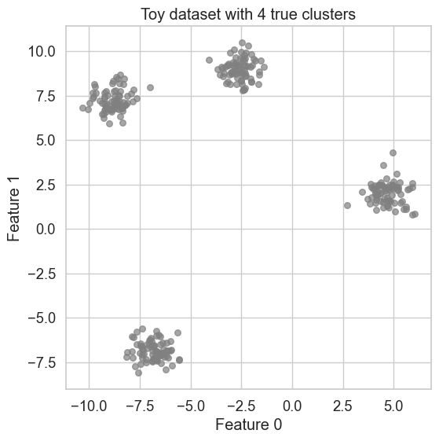
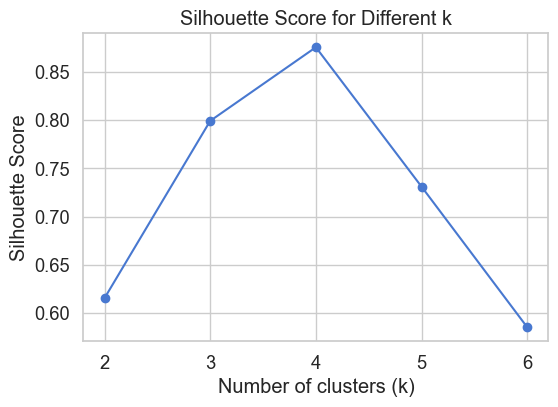
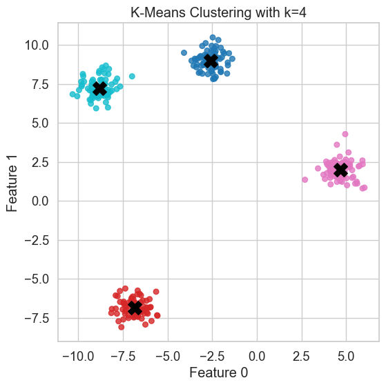
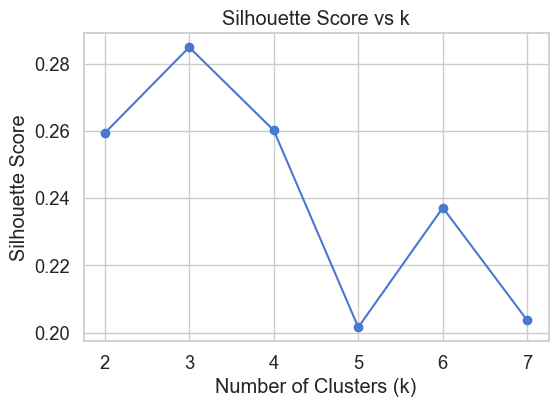
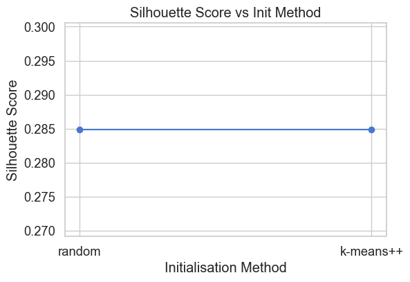
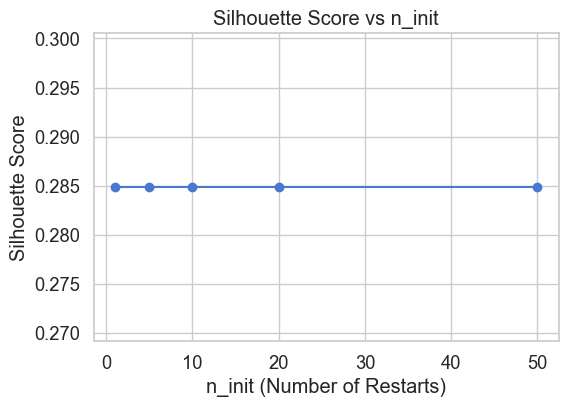

import numpy as np
import matplotlib.pyplot as plt
import seaborn as sns
from sklearn.datasets import make_blobs
from sklearn.cluster import KMeans
from sklearn.metrics import silhouette_score
import pandas as pd
sns.set(style="whitegrid", palette="muted", font_scale=1.2)K-Means Clustering
In this notebook, we’ll dive deeper into K-Means, one of the most widely used clustering algorithms. We’ll explore how it works, how to choose the number of clusters (k), and how to evaluate the clustering quality.
We’ll use the Silhouette Score as our primary evaluation metric, along with visual inspection.
How K-Means Clustering Works
K-Means is a centroid-based clustering algorithm that partitions the dataset into (k) clusters.
Steps:
- Initialisation: Randomly place (k) centroids in the feature space.
- Assignment: Each data point is assigned to the nearest centroid, forming clusters.
- Update: New centroids are computed as the mean of all points in each cluster.
- Repeat: Assignment and update steps repeat until centroids stabilise or a maximum number of iterations is reached.
The algorithm aims to minimise the total within-cluster sum of squares (inertia), i.e., the variance within each cluster.
K-Means works well for convex, isotropic clusters but struggles with non-spherical or unevenly sized groups.
K-Means: Hyperparameters and Initialisation Strategies
Key Hyperparameters
Apart from the number of clusters \(k\), the main hyperparameters in K-Means include:
init: How the initial centroids are selected.- Common values:
"random"or"k-means++"
- Common values:
n_init: Number of times the algorithm is run with different centroid seeds. The best result (lowest inertia) is chosen.- Default is 10 in Scikit-Learn.
max_iter: Maximum number of iterations allowed for a single run.random_state: Controls randomness in centroid initialisation for reproducibility.
📉 Inertia in K-Means
Inertia measures the total squared distance of each data point to its assigned cluster centroid. It represents how compact the clusters are.
\[ \text{Inertia} = \sum_{i=1}^{k} \sum_{x \in C_i} \| x - \mu_i \|^2 \]
- \(k\): number of clusters
- \(C_i\): cluster \(i\)
- \(\mu_i\): centroid of cluster \(i\)
- \(x\): data point in \(C_i\)
- \(\| x - \mu_i \|^2\): squared Euclidean distance
Lower inertia means tighter, more coherent clusters.
Choosing the Number of Clusters (\(k\))
K-Means requires \(k\) to be specified in advance. There are two common methods to choose it:
Elbow Method:
Plot the total within-cluster sum of squares (WCSS or inertia) against different \(k\) values. Look for an “elbow” in the plot — a point where adding more clusters doesn’t significantly reduce the inertia.Silhouette Score:
Evaluate how well-separated and compact the clusters are. The \(k\) that gives the highest average silhouette score is often a good choice.
k-means++ Initialisation
Initialising centroids randomly can lead to poor convergence or suboptimal clustering. k-means++ is a smarter initialisation strategy that improves both speed and accuracy.
How it works:
- Randomly choose the first centroid from the data points.
- For each remaining data point \(x\), compute its distance \(D(x)\) to the nearest already chosen centroid.
- Select the next centroid from the remaining points with probability proportional to \(D(x)^2\).
- Repeat until \(k\) centroids are selected.
This spreads the initial centroids out in the data space and often results in better clustering.
In Scikit-Learn, this is enabled by default using init="k-means++".
In practice, using init="k-means++" with multiple n_init runs and evaluating with the silhouette score or elbow method gives reliable and stable results.
Demonstration: K-Means on Synthetic Data
Choosing the Number of Clusters
We’ll run K-Means for different values of \(k\) and compute the average silhouette score to decide the best number of clusters.
X, y_true = make_blobs(n_samples=300, centers=4, cluster_std=0.60, random_state=42)
plt.figure(figsize=(6, 6))
plt.scatter(X[:, 0], X[:, 1], s=30, color='grey', alpha=0.7)
plt.title("Toy dataset with 4 true clusters")
plt.xlabel("Feature 0")
plt.ylabel("Feature 1")
plt.show()
results = []
ks = [2, 3, 4, 5, 6]
for k in ks:
km = KMeans(n_clusters=k, random_state=42)
labels = km.fit_predict(X)
sil = silhouette_score(X, labels)
results.append((k, sil))
df = pd.DataFrame(results, columns=["k", "Silhouette"])
display(df)
# Plot silhouette score vs k
plt.figure(figsize=(6,4))
plt.plot(df.k, df.Silhouette, marker='o')
plt.xlabel("Number of clusters (k)")
plt.ylabel("Silhouette Score")
plt.title("Silhouette Score for Different k")
plt.grid(True)
plt.show()| k | Silhouette | |
|---|---|---|
| 0 | 2 | 0.615485 |
| 1 | 3 | 0.799280 |
| 2 | 4 | 0.875647 |
| 3 | 5 | 0.731072 |
| 4 | 6 | 0.585323 |

Final Clustering with Best k
From the silhouette scores, we choose the best \(k\) (typically where the score peaks). Let’s fit K-Means again and visualise the clusters.
best_k = 4
km = KMeans(n_clusters=best_k, random_state=42)
labels = km.fit_predict(X)
centroids = km.cluster_centers_
plt.figure(figsize=(6,6))
plt.scatter(X[:, 0], X[:, 1], c=labels, cmap='tab10', s=30, alpha=0.8)
plt.scatter(centroids[:, 0], centroids[:, 1], s=200, c='black', marker='X')
plt.title(f"K-Means Clustering with k={best_k}")
plt.xlabel("Feature 0")
plt.ylabel("Feature 1")
plt.show()
Application: Clustering on the Wine Dataset
In this section, we’ll apply K-Means clustering to the Wine dataset, a real-world dataset included in Scikit-Learn.
The dataset contains chemical properties of wines derived from three different cultivars (grape varieties). Each sample includes 13 numerical features such as: - Alcohol - Malic acid - Ash - Flavanoids - Color intensity
Although the dataset has labels (the cultivar), we’ll treat this as an unsupervised problem and see how well K-Means can discover the natural groupings.
from sklearn.datasets import load_wine
from sklearn.preprocessing import StandardScaler
from sklearn.decomposition import PCA
# Load dataset
wine = load_wine()
X_raw = wine.data
y_true = wine.target
feature_names = wine.feature_names
# Standardise features
scaler = StandardScaler()
X = scaler.fit_transform(X_raw)
df_wine = pd.DataFrame(X_raw, columns=feature_names)
df_wine['Target (Cultivar)'] = y_true
# Display first few rows
df_wine.head()
| alcohol | malic_acid | ash | alcalinity_of_ash | magnesium | total_phenols | flavanoids | nonflavanoid_phenols | proanthocyanins | color_intensity | hue | od280/od315_of_diluted_wines | proline | Target (Cultivar) | |
|---|---|---|---|---|---|---|---|---|---|---|---|---|---|---|
| 0 | 14.23 | 1.71 | 2.43 | 15.6 | 127.0 | 2.80 | 3.06 | 0.28 | 2.29 | 5.64 | 1.04 | 3.92 | 1065.0 | 0 |
| 1 | 13.20 | 1.78 | 2.14 | 11.2 | 100.0 | 2.65 | 2.76 | 0.26 | 1.28 | 4.38 | 1.05 | 3.40 | 1050.0 | 0 |
| 2 | 13.16 | 2.36 | 2.67 | 18.6 | 101.0 | 2.80 | 3.24 | 0.30 | 2.81 | 5.68 | 1.03 | 3.17 | 1185.0 | 0 |
| 3 | 14.37 | 1.95 | 2.50 | 16.8 | 113.0 | 3.85 | 3.49 | 0.24 | 2.18 | 7.80 | 0.86 | 3.45 | 1480.0 | 0 |
| 4 | 13.24 | 2.59 | 2.87 | 21.0 | 118.0 | 2.80 | 2.69 | 0.39 | 1.82 | 4.32 | 1.04 | 2.93 | 735.0 | 0 |
Hyperparameter: Number of Clusters (k)
The k parameter specifies the number of clusters that K-Means will try to find.
Since the wine dataset has 3 known cultivars, we’ll test a range of \(k\) values around that to see which yields the best silhouette score, which reflects how well-separated and compact the clusters are.
from sklearn.cluster import KMeans
from sklearn.metrics import silhouette_score
silhouette_scores_k = []
ks = range(2, 8)
for k in ks:
km = KMeans(n_clusters=k, init="k-means++", n_init=10, random_state=42)
labels = km.fit_predict(X)
score = silhouette_score(X, labels)
silhouette_scores_k.append((k, score))
df_k = pd.DataFrame(silhouette_scores_k, columns=["k", "Silhouette Score"])
df_k
plt.figure(figsize=(6,4))
plt.plot(df_k["k"], df_k["Silhouette Score"], marker='o', linestyle='-')
plt.xlabel("Number of Clusters (k)")
plt.ylabel("Silhouette Score")
plt.title("Silhouette Score vs k")
plt.grid(True)
plt.show()

Hyperparameter: Centroid Initialisation (init)
The init parameter controls how the initial centroids are selected:
"random": choose k random points from the data"k-means++": spread out initial centroids for better results (default)
Poor initialisation can lead to suboptimal clustering. Let’s compare the silhouette scores for both.
init_methods = ["random", "k-means++"]
silhouette_scores_init = []
for method in init_methods:
km = KMeans(n_clusters=3, init=method, n_init=10, random_state=42)
labels = km.fit_predict(X)
score = silhouette_score(X, labels)
silhouette_scores_init.append((method, score))
df_init = pd.DataFrame(silhouette_scores_init, columns=["Init Method", "Silhouette Score"])
df_init
plt.figure(figsize=(6,4))
plt.plot(df_init["Init Method"], df_init["Silhouette Score"], marker='o', linestyle='-')
plt.xlabel("Initialisation Method")
plt.ylabel("Silhouette Score")
plt.title("Silhouette Score vs Init Method")
plt.grid(True)
plt.show()
Hyperparameter: Number of Initialisations (n_init)
K-Means is run multiple times with different random initialisations. The n_init parameter determines how many times this happens.
Higher n_init increases robustness, but also computation time. We’ll test a few values to see if performance improves.
n_init_vals = [1, 5, 10, 20, 50]
silhouette_scores_ninit = []
for n in n_init_vals:
km = KMeans(n_clusters=3, init="k-means++", n_init=n, random_state=42)
labels = km.fit_predict(X)
score = silhouette_score(X, labels)
silhouette_scores_ninit.append((n, score))
df_ninit = pd.DataFrame(silhouette_scores_ninit, columns=["n_init", "Silhouette Score"])
df_ninit
plt.figure(figsize=(6,4))
plt.plot(df_ninit["n_init"], df_ninit["Silhouette Score"], marker='o', linestyle='-')
plt.xlabel("n_init (Number of Restarts)")
plt.ylabel("Silhouette Score")
plt.title("Silhouette Score vs n_init")
plt.grid(True)
plt.show()
Final K-Means Clustering with Selected Hyperparameters
Based on our tests: - k = 3 yields the best clustering - init = "k-means++" provides better centroid spread - n_init = 10 is sufficient for stable results
Let’s run K-Means one last time with these settings.
best_k = 3
km_final = KMeans(n_clusters=best_k, init="k-means++", n_init=10, random_state=42)
final_labels = km_final.fit_predict(X)
# Optional: inspect how many points are in each cluster
pd.Series(final_labels).value_counts().sort_index()
from sklearn.metrics import silhouette_score
import seaborn as sns
# Compute silhouette score
final_sil_score = silhouette_score(X, final_labels)
print(f"Silhouette Score (final model): {final_sil_score:.4f}")
# Create a DataFrame for comparison
df_compare = pd.DataFrame({
"True Label": y_true,
"Cluster": final_labels
})
# Crosstab to see composition of each cluster by true label
cluster_summary = pd.crosstab(df_compare["Cluster"], df_compare["True Label"],
rownames=["Cluster"], colnames=["True Cultivar"])
cluster_summary
Silhouette Score (final model): 0.2849| True Cultivar | 0 | 1 | 2 |
|---|---|---|---|
| Cluster | |||
| 0 | 0 | 65 | 0 |
| 1 | 0 | 3 | 48 |
| 2 | 59 | 3 | 0 |